📈 A股全局圆弧底形态分析
基于全局圆弧底检测算法的形态分析
生成时间: 2025-07-24 01:16:53
检测结果: 共发现 100 只股票存在全局圆弧底形态
A股全局圆弧底形态分析
共 100 只股票，1 页
第 1 页，共 1 页
similar_603959.SH 603959.SH 相似度: 0.864 区间: 0-141 R²=0.000
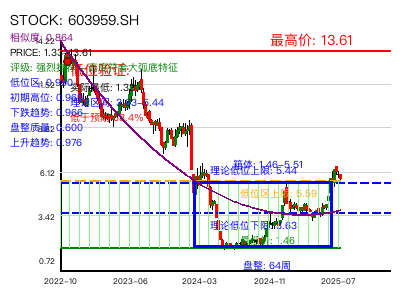
similar_603185.SH 603185.SH 相似度: 0.863 区间: 0-141 R²=0.000
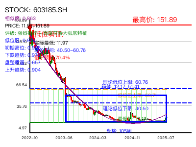
similar_300769.SZ 300769.SZ 相似度: 0.859 区间: 0-141 R²=0.000
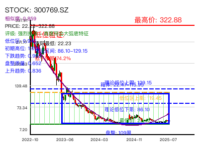
similar_688639.SH 688639.SH 相似度: 0.852 区间: 0-141 R²=0.000
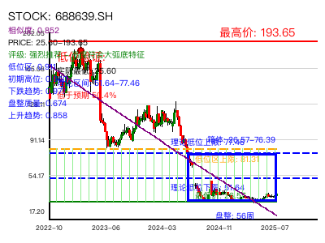
similar_603032.SH 603032.SH 相似度: 0.848 区间: 0-141 R²=0.000
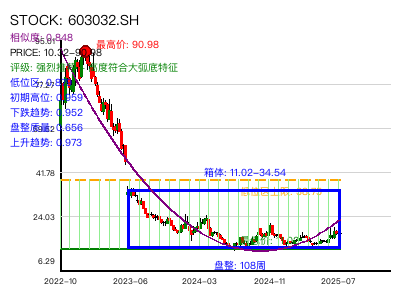
similar_688063.SH 688063.SH 相似度: 0.846 区间: 0-141 R²=0.000
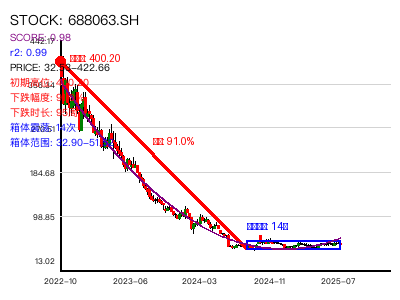
similar_301120.SZ 301120.SZ 相似度: 0.846 区间: 0-141 R²=0.000
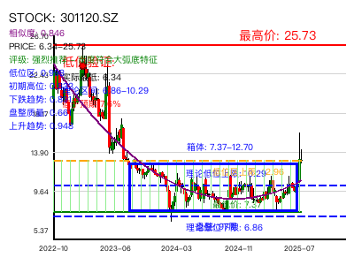
similar_002549.SZ 002549.SZ 相似度: 0.844 区间: 0-141 R²=0.000

similar_688077.SH 688077.SH 相似度: 0.844 区间: 0-141 R²=0.000
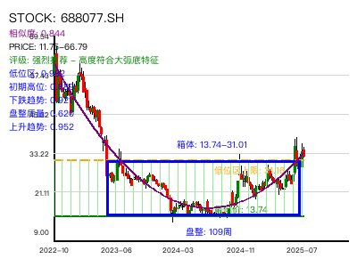
similar_601908.SH 601908.SH 相似度: 0.844 区间: 0-141 R²=0.000
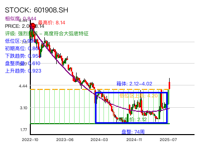
similar_300887.SZ 300887.SZ 相似度: 0.843 区间: 0-141 R²=0.000
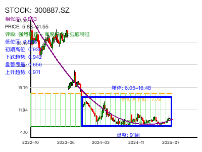
similar_688189.SH 688189.SH 相似度: 0.842 区间: 0-141 R²=0.000
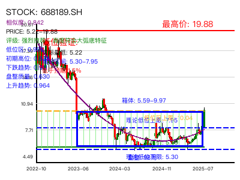
similar_001269.SZ 001269.SZ 相似度: 0.840 区间: 0-141 R²=0.000
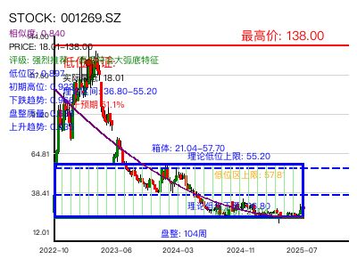
similar_603444.SH 603444.SH 相似度: 0.839 区间: 0-141 R²=0.000
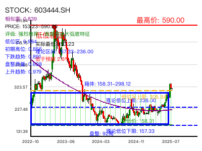
similar_688298.SH 688298.SH 相似度: 0.839 区间: 0-141 R²=0.000
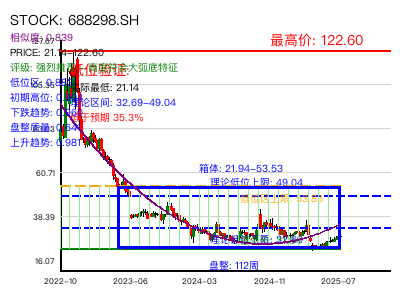
similar_000803.SZ 000803.SZ 相似度: 0.838 区间: 0-141 R²=0.000
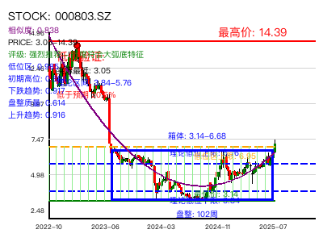
similar_688201.SH 688201.SH 相似度: 0.838 区间: 0-141 R²=0.000
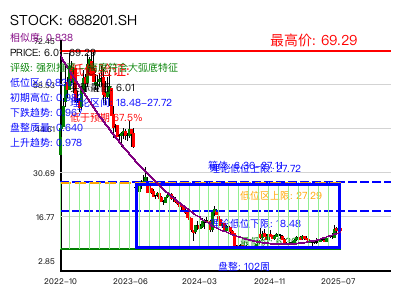
similar_002459.SZ 002459.SZ 相似度: 0.837 区间: 0-141 R²=0.000
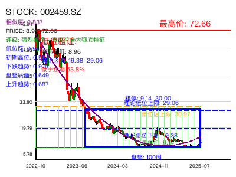
similar_688131.SH 688131.SH 相似度: 0.836 区间: 0-141 R²=0.000
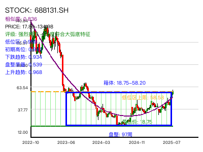
similar_688618.SH 688618.SH 相似度: 0.836 区间: 0-141 R²=0.000
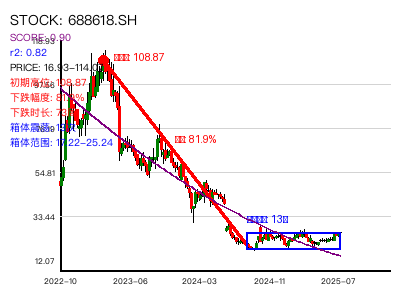
similar_688202.SH 688202.SH 相似度: 0.835 区间: 0-141 R²=0.000

similar_688499.SH 688499.SH 相似度: 0.834 区间: 0-141 R²=0.000
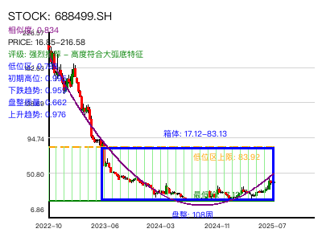
similar_688513.SH 688513.SH 相似度: 0.834 区间: 0-141 R²=0.000
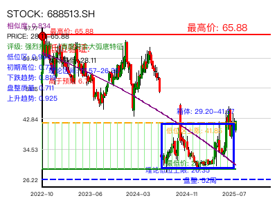
similar_688711.SH 688711.SH 相似度: 0.834 区间: 0-141 R²=0.000
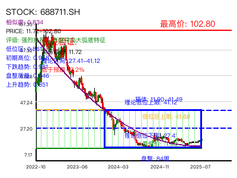
similar_603876.SH 603876.SH 相似度: 0.833 区间: 0-141 R²=0.000
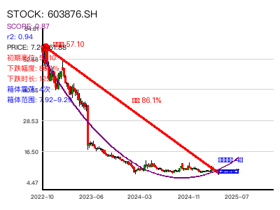
similar_301096.SZ 301096.SZ 相似度: 0.833 区间: 0-141 R²=0.000
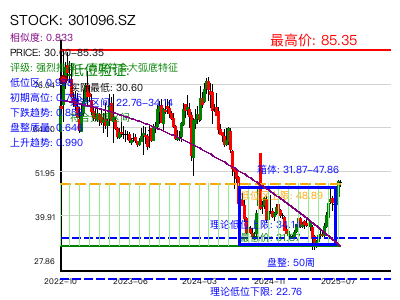
similar_301372.SZ 301372.SZ 相似度: 0.833 区间: 0-99 R²=0.000
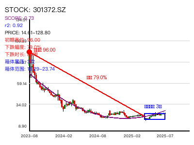
similar_688390.SH 688390.SH 相似度: 0.833 区间: 0-141 R²=0.000
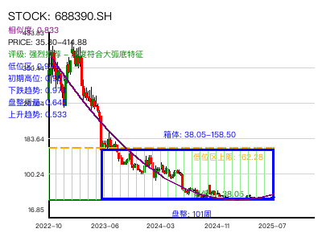
similar_002528.SZ 002528.SZ 相似度: 0.832 区间: 0-141 R²=0.000
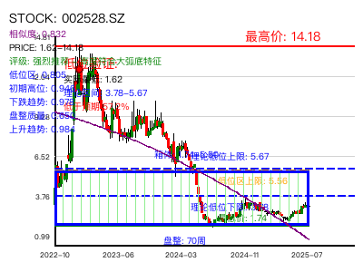
similar_688670.SH 688670.SH 相似度: 0.832 区间: 0-141 R²=0.000
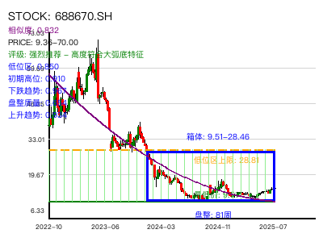
similar_688348.SH 688348.SH 相似度: 0.832 区间: 0-141 R²=0.000
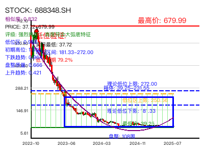
similar_688033.SH 688033.SH 相似度: 0.831 区间: 0-141 R²=0.000
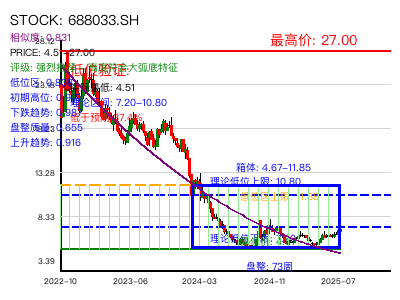
similar_002250.SZ 002250.SZ 相似度: 0.831 区间: 0-141 R²=0.000
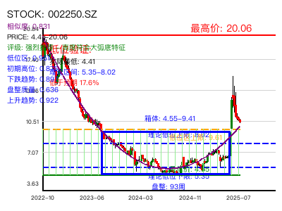
similar_300586.SZ 300586.SZ 相似度: 0.831 区间: 0-141 R²=0.000

similar_002805.SZ 002805.SZ 相似度: 0.830 区间: 0-141 R²=0.000
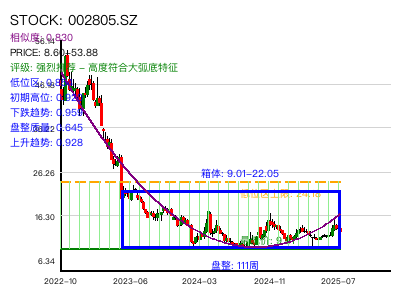
similar_688265.SH 688265.SH 相似度: 0.829 区间: 0-141 R²=0.000

similar_688719.SH 688719.SH 相似度: 0.829 区间: 0-92 R²=0.000
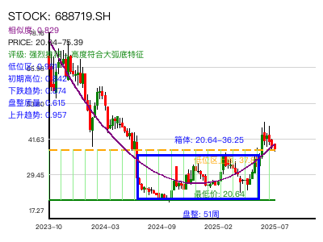
similar_002192.SZ 002192.SZ 相似度: 0.828 区间: 0-141 R²=0.000
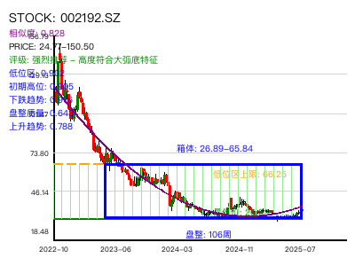
similar_688560.SH 688560.SH 相似度: 0.828 区间: 0-141 R²=0.000
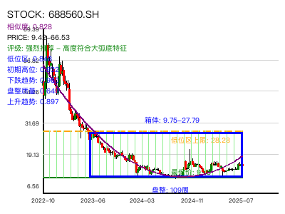
similar_301153.SZ 301153.SZ 相似度: 0.827 区间: 0-141 R²=0.000
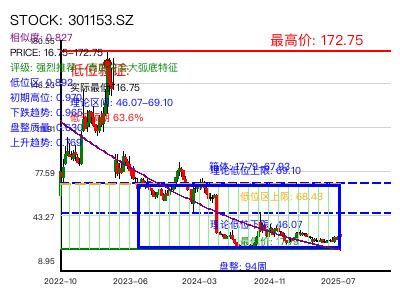
similar_688075.SH 688075.SH 相似度: 0.827 区间: 0-141 R²=0.000
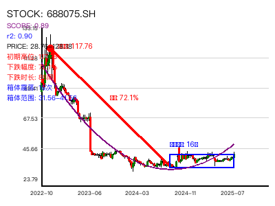
similar_301260.SZ 301260.SZ 相似度: 0.827 区间: 0-125 R²=0.000
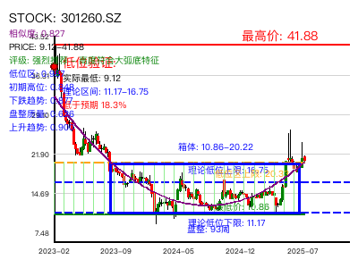
similar_300767.SZ 300767.SZ 相似度: 0.827 区间: 0-141 R²=0.000
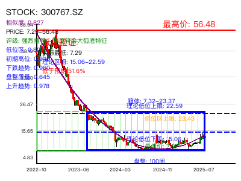
similar_688599.SH 688599.SH 相似度: 0.827 区间: 0-141 R²=0.000
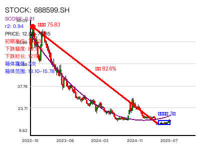
similar_688275.SH 688275.SH 相似度: 0.827 区间: 0-141 R²=0.000
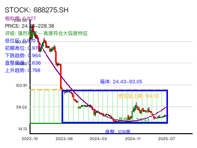
similar_688066.SH 688066.SH 相似度: 0.826 区间: 0-141 R²=0.000
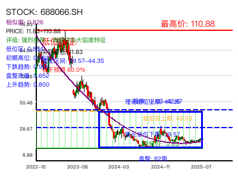
similar_300982.SZ 300982.SZ 相似度: 0.826 区间: 0-141 R²=0.000
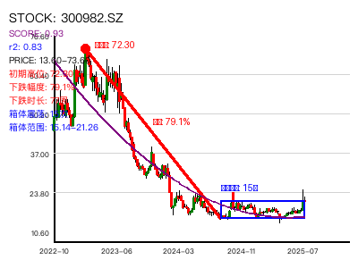
similar_300533.SZ 300533.SZ 相似度: 0.826 区间: 0-141 R²=0.000
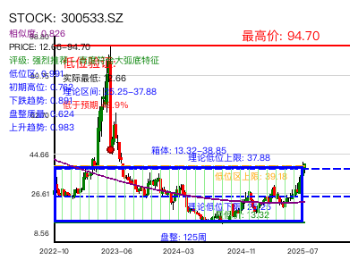
similar_688707.SH 688707.SH 相似度: 0.826 区间: 0-141 R²=0.000
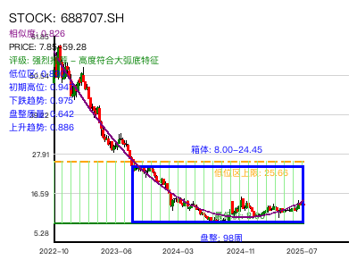
similar_688317.SH 688317.SH 相似度: 0.826 区间: 0-141 R²=0.000
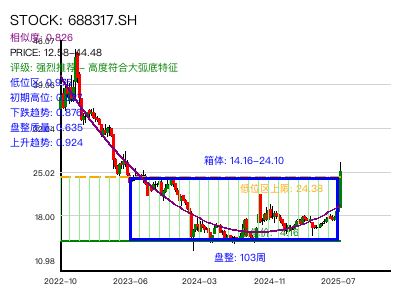
similar_605168.SH 605168.SH 相似度: 0.824 区间: 0-141 R²=0.000
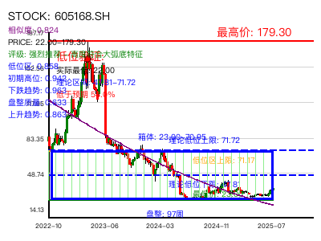
similar_688203.SH 688203.SH 相似度: 0.824 区间: 0-141 R²=0.000
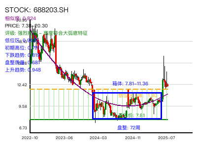
similar_300142.SZ 300142.SZ 相似度: 0.823 区间: 0-141 R²=0.000
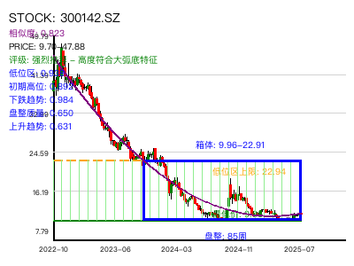
similar_603936.SH 603936.SH 相似度: 0.823 区间: 0-141 R²=0.000
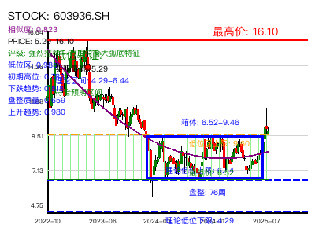
similar_301511.SZ 301511.SZ 相似度: 0.822 区间: 0-98 R²=0.000
similar_688357.SH 688357.SH 相似度: 0.822 区间: 0-141 R²=0.000
similar_603595.SH 603595.SH 相似度: 0.821 区间: 0-141 R²=0.000

similar_300518.SZ 300518.SZ 相似度: 0.819 区间: 0-141 R²=0.000
similar_300410.SZ 300410.SZ 相似度: 0.818 区间: 0-141 R²=0.000
similar_603212.SH 603212.SH 相似度: 0.818 区间: 0-141 R²=0.000
similar_002121.SZ 002121.SZ 相似度: 0.818 区间: 0-141 R²=0.000
similar_688787.SH 688787.SH 相似度: 0.818 区间: 0-141 R²=0.000
similar_688148.SH 688148.SH 相似度: 0.818 区间: 0-141 R²=0.000
similar_002240.SZ 002240.SZ 相似度: 0.818 区间: 0-141 R²=0.000
similar_301071.SZ 301071.SZ 相似度: 0.818 区间: 0-141 R²=0.000
similar_688391.SH 688391.SH 相似度: 0.817 区间: 0-141 R²=0.000
similar_603806.SH 603806.SH 相似度: 0.817 区间: 0-141 R²=0.000
similar_301322.SZ 301322.SZ 相似度: 0.817 区间: 0-121 R²=0.000
similar_603396.SH 603396.SH 相似度: 0.816 区间: 0-141 R²=0.000
similar_000546.SZ 000546.SZ 相似度: 0.816 区间: 0-141 R²=0.000

similar_688726.SH 688726.SH 相似度: 0.815 区间: 0-37 R²=0.000
similar_603208.SH 603208.SH 相似度: 0.815 区间: 0-141 R²=0.000
similar_600328.SH 600328.SH 相似度: 0.815 区间: 0-141 R²=0.000
similar_688556.SH 688556.SH 相似度: 0.815 区间: 0-141 R²=0.000
similar_688026.SH 688026.SH 相似度: 0.815 区间: 0-141 R²=0.000
similar_002197.SZ 002197.SZ 相似度: 0.813 区间: 0-141 R²=0.000
similar_300813.SZ 300813.SZ 相似度: 0.813 区间: 0-141 R²=0.000
similar_688308.SH 688308.SH 相似度: 0.812 区间: 0-141 R²=0.000
similar_688339.SH 688339.SH 相似度: 0.812 区间: 0-141 R²=0.000
similar_600976.SH 600976.SH 相似度: 0.812 区间: 0-141 R²=0.000

similar_300393.SZ 300393.SZ 相似度: 0.812 区间: 0-141 R²=0.000
similar_688779.SH 688779.SH 相似度: 0.810 区间: 0-141 R²=0.000
similar_600009.SH 600009.SH 相似度: 0.810 区间: 0-141 R²=0.000

similar_603076.SH 603076.SH 相似度: 0.810 区间: 0-141 R²=0.000
similar_688680.SH 688680.SH 相似度: 0.810 区间: 0-141 R²=0.000

similar_000929.SZ 000929.SZ 相似度: 0.810 区间: 0-141 R²=0.000
similar_688023.SH 688023.SH 相似度: 0.810 区间: 0-141 R²=0.000
similar_688700.SH 688700.SH 相似度: 0.810 区间: 0-141 R²=0.000
similar_688016.SH 688016.SH 相似度: 0.809 区间: 0-141 R²=0.000
similar_002201.SZ 002201.SZ 相似度: 0.809 区间: 0-141 R²=0.000
similar_603589.SH 603589.SH 相似度: 0.809 区间: 0-141 R²=0.000
similar_688598.SH 688598.SH 相似度: 0.809 区间: 0-141 R²=0.000
similar_603137.SH 603137.SH 相似度: 0.809 区间: 0-115 R²=0.000
similar_001222.SZ 001222.SZ 相似度: 0.809 区间: 0-141 R²=0.000
similar_300575.SZ 300575.SZ 相似度: 0.807 区间: 0-141 R²=0.000
similar_603388.SH 603388.SH 相似度: 0.807 区间: 0-141 R²=0.000
similar_600754.SH 600754.SH 相似度: 0.807 区间: 0-141 R²=0.000
similar_300645.SZ 300645.SZ 相似度: 0.807 区间: 0-141 R²=0.000
similar_605117.SH 605117.SH 相似度: 0.806 区间: 0-141 R²=0.000
similar_600533.SH 600533.SH 相似度: 0.806 区间: 0-141 R²=0.000